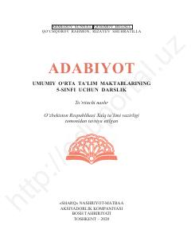

A55-sinf o'quvchilari uchun mo'ljallangan adabiyot fanidan o'quv darsligi.
Ushbu darslik umumiy o'rta ta'lim maktablarining 5-sinf o'quvchilari uchun mo'ljallangan bo'lib, o'zbek va jahon adabiyoti namunalari, ertaklar, hikmatlar hamda shoir va yozuvchilar ijodini qamrab oladi. Kitob o'quvchilarda badiiy so'zga bo'lgan qiziqishni uyg'otish, ma'naviy-axloqiy tarbiya berish va obrazli fikrlashni rivojlantirishni maqsad qiladi.